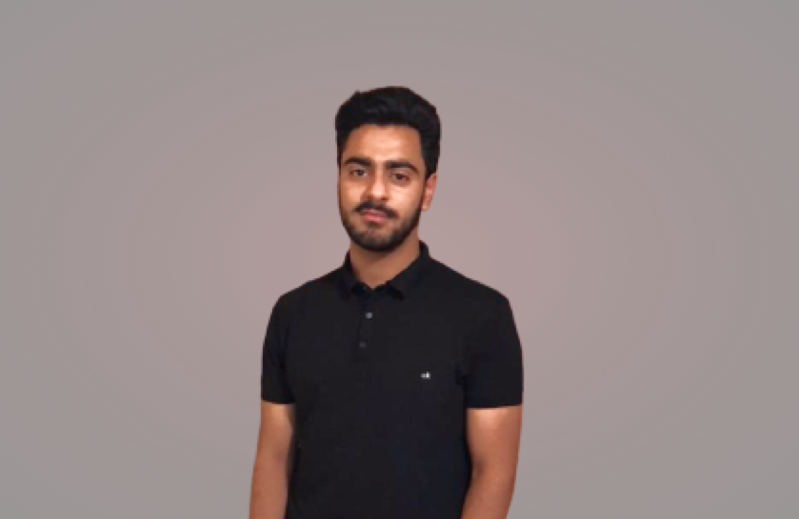

I design & build
digital products.

About
Hi, I'm Musharaf Aijaz. I'm a multi-talented human with over 10+ years of experiences in wide range of design disciplines.
You can also call me a product designer, experience designer, interaction, UI, UX or by any other market defined function-title. I'm also a multi-disciplinary maker with over 10 years of experiences in wide range of design disciplines, manager, advisor, entrepreneur, front-end developer, music enthusiast, traveler, photographer and more.
I don't like to define myself by the work I've done. I define myself by the work I want to do. Skills can be taught, personality is inherent. I prefer to keep learning, continue challenging myself, and do interesting things that matter.
Fueled by high energy levels and boundless enthusiasm, I'm easily inspired and more then willing to follow my fascinations wherever they take me. I'm passionate, expressive, multi-talented spirit with a natural ability to entertain and inspire. I'm never satisfied to just come up with ideas. Instead I have an almost impulsive need to act on them.
My abundant energy fuels me in the pursuit of many interests, hobbies, areas of study and artistic endeavors. I'm a fast learner, able to pick up new skills and juggle different projects and roles with relative ease.
I like to develop expertise in a number of areas over the course of my life and career. My personality type is ENTJ. I currently work remotely with a selected freelance client base and are open for new opportunities.
You can read more about my biography, experience, skills, education and much more in the PDF attached bellow: